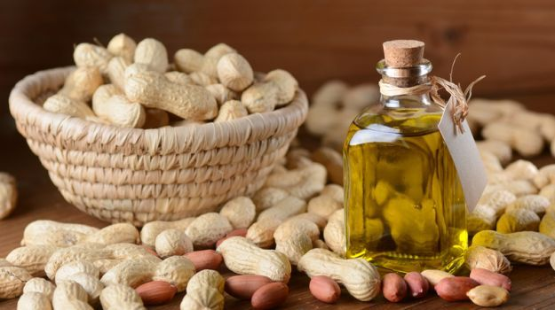

Goodness of Peanut Oil
Groundnut oil is naturally sweet and flavoured edible oil. It s very high in energy, has a high burning and smoking point, and contains MUFA, PUFA, Vitamins A, D and E in appropriate amounts. It helps in lowering the bad cholesterol and hence maintains heart health.

Advantages of Cold Press Peanut Oil
The first difference between the two types of oil is the way they are made. In cold pressing, oil is extracted at room temperature, at around 27 degrees centigrade, and the acid value is relatively low, so oil products are obtained after precipitation and filtration. This means that there is no need for any refinement. Hot pressing involves extracting oil at high temperatures, and because the acid value rises significantly, it loses most of its natural quality. therefore hot pressed oils are refined to make them fit for consumption

HEALTH BENEFITS
1.Prevents and soothes cardiovascular disease
2.Lowers the share of bad cholesterol in blood
3.Helps prevent heart attack and stroke